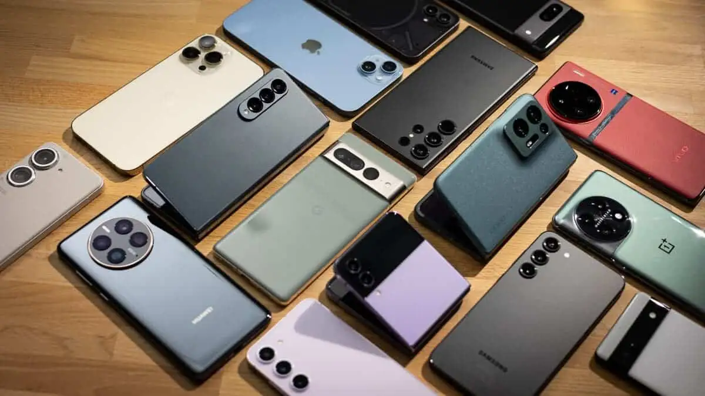
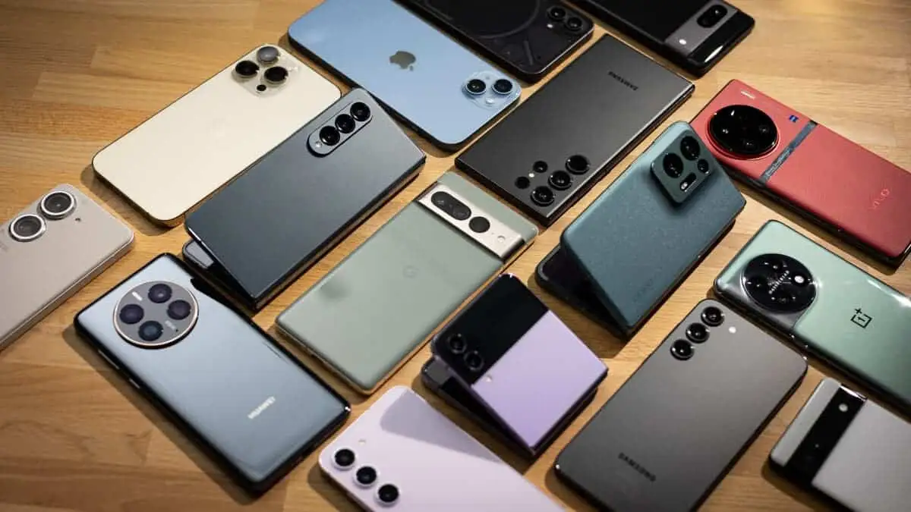

| iPhone 16 Pro |
Apple A18 Pro |
48 MP + 12 MP Telephoto + 48 MP Ultrawide |
~3582 mAh |
iOS Users, Photography, AI Features |
| Samsung Galaxy S25 Ultra |
Snapdragon 8 Gen 4 (Elite) |
200 MP + 50 MP Periscope + 10 MP Telephoto |
5000 mAh |
Pro Photography, Multitasking, Productivity |
| Samsung Galaxy S24 Ultra |
Snapdragon 8 Gen 3 |
200 MP Quad Camera Setup |
5000 mAh |
Stylus Use, Productivity, Gaming |
| Google Pixel 9 Pro |
Google Tensor G4 |
50 MP + AI Image Processing |
4700 mAh |
Clean Android, Smart Features, AI Use |
| OnePlus 13 |
Snapdragon 8 Gen 4 (Expected) |
50 MP Triple Camera |
~6000 mAh |
Performance, Gaming, Fast Charging |
| Nothing Phone (2a) |
MediaTek Dimensity 7200 Pro |
50 MP Dual Camera |
5000 mAh |
Stylish Budget Option |
 
